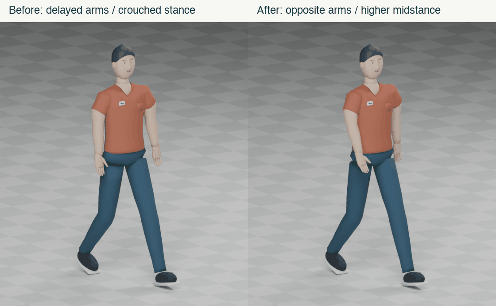
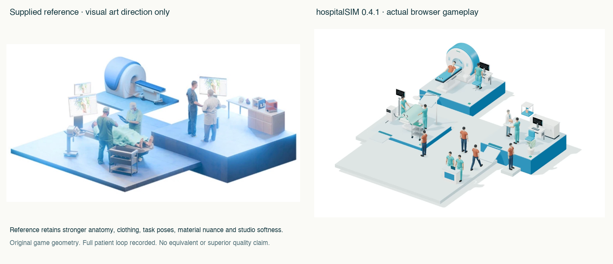

Actual browser gameplay, seed431,3×. Eli arrives at00:19, receives consultation, optional imaging and care, and is counted discharged at02:19. All120 elapsed game seconds are classified once. This recording is not a render or invented footage.
Download full recording · Recorded visit log · Full engineering record

Original procedural rig. Blender4.0.2 executed. Walk remains0.90s at1.65m/s; maximum authored stance drift3.06mm. Other eight clips per character unchanged. Checks and asset hashes.

Reference is art direction only. Original game geometry. No equivalent or superior quality claim. Remaining gaps include stylized repeated people, clothing joins, approximate task contact, rigid cloth and geometric circulation space. Manual staff reassignment still changes posts without a modeled commute. Actual iPhone testing and independent player feedback remain pending.